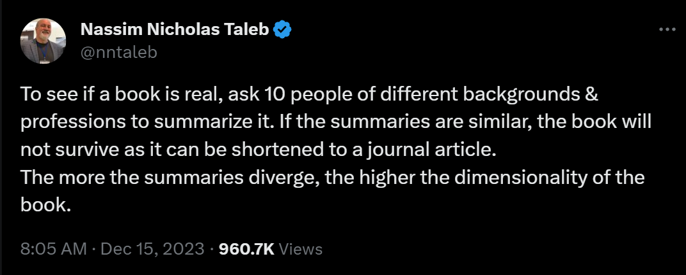
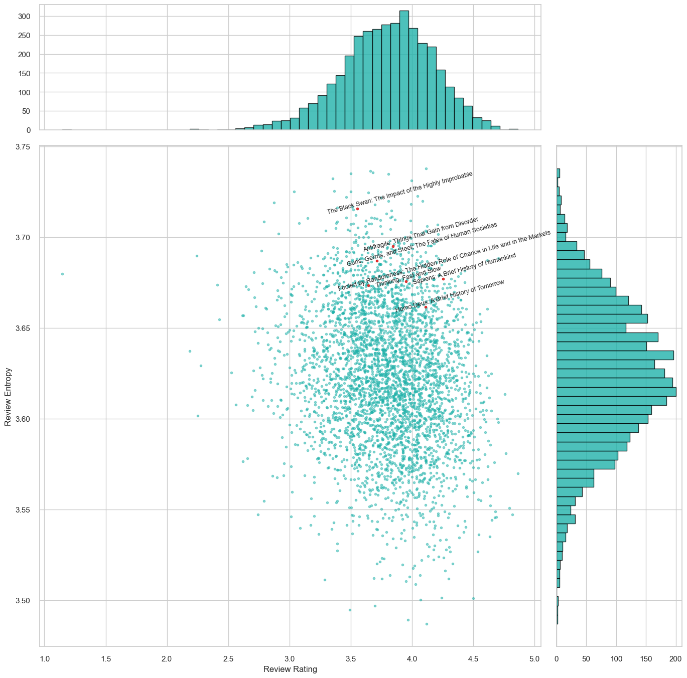

The inspiration for this exploration came from a Twitter (or X) post by Nassim Taleb:

In this article, I propose a simple method to quantify this "summary diversity" or "book dimensionality" using natural language processing (NLP) and a bit match approach. The process involves:
- Collecting book review data. Since it's impractical to have thousands of books summarized by individuals, I utilize Goodreads reviews as a proxy, trading some accuracy for scalability.
- Converting each review into numerical embeddings using pre-trained sentence transformers. For each book, this results in a matrix $X$ of dimensions $n \times d$ $n$ is the number of reviews and $d$ is the embedding dimension.
- Applying Principal Component Analysis (PCA) or equivalently, Singular Value Decomposition (SVD) to the review embeddings: $$ X = USV $$ where $U$ and $V$ are unitary matrices and $S$ is a diagnoal matrix with singular values $s_1 \geq s_2 \geq \cdots \geq s_m$ with $m=\min(n, d)$.
- Computing the entropy of the singular values: $$ \text{entropy} = -\sum_{i=1}^m p_i \log p_i \text{, where } p_i = \frac{s_i}{\sum_{i=1}^m s_i} $$
The rationale behind this approach is as follows:
- Similar book reviews imply correlated review embeddings $X$, leading to a significant disparity in the singular values of $X$ (i.e. $s_1$ much larger than $s_m$), resulting in low entropy.
- Diversified and independent reviews suggest uncorrelated and orthogonal embeddings $X$ causing the singular values of $X$ to be relatively uniform, leading to high entropy.
This concept mirrors methods used to measure portfolio diversity in finance.
The following figure showcases a comparison of "review entropy" for three thousand popular non-fiction books on Goodreads (y-axis) against their average ratings (x-axis). Intriguingly, there is no correlation between review entropy and ratings. Notably, Nassim Taleb's books exhibit high review entropy yet possess average ratings. I wonder if he have employed a similar analysis and saw these results before sending his tweet lol.

Code
I utilized the Goodreads book review dataset from Kaggle, focusing solely on non-fiction books due to the large data size.
def filter_genre(x):
return len(x) > 0 and max(x, key=x.get) in ['non-fiction','history, historical fiction, biography']
book_genre = pd.read_json("goodreads_book_genres_initial.json", orient="records", lines=True)
books_filtered = set(book_genre.loc[book_genre['genres'].apply(filter_genre), 'book_id'])
Then, I processed the reviews through pre-trained sentence transformers to generate numerical embeddings. The all-MiniLM-L12-v1 model has an embedding dimension of 384.
from sentence_transformers import SentenceTransformer
model = SentenceTransformer('all-MiniLM-L12-v1')
for i, chunk in enumerate(pd.read_json("goodreads_reviews_dedup.json", orient="records", lines=True, chunksize=500000)):
chunk = chunk.loc[chunk['book_id'].isin(books_filtered), ['book_id', 'rating', 'review_text']]
chunk = chunk.loc[chunk['review_text'].str.len()>=100]
if chunk.shape[0] > 0:
embed = pd.DataFrame(model.encode(chunk['review_text'].tolist(), show_progress_bar=True), index=chunk['book_id'])
embed.columns = embed.columns.astype(str)
embed.to_parquet(f"book_review_embeddings/{i}.parquet")
Finally, I computed the SVD for each book, considering those with at least 50 reviews. To ensure fairness, I sampled 50 reviews per book for entropy calculation, as books with larger numbers of reviews (for example 1000) could inherently have higher entropy then the ones with 50-100 reviews.
embed = pd.read_parquet('C:/Users/soars/Downloads/goodreads/book_review_embeddings')
output = pd.DataFrame({'review_count': embed.index.value_counts()})
output = output.loc[output'review_count']>=50]
for i in tqdm(output.index):
_, s, _ = np.linalg.svd(embed.loc[i].values[:50, :])
p = s/np.sum(s)
p = p[p>0]
output.loc[i, 'entropy'] = -np.dot(p, np.log(p))
Limitations
- Not all reviews are summaries; some discuss editions or translations, especially for classical books which have many different editions. Some reviews, of a biography for example, focus on characters rather than content. For instance, Walter Isaacson's "Steve Jobs" has a moderate review entropy score (~3.63).
- The general-purpose nature of pre-trained embeddings means they also capture reviewers' styles and emotions, which aren't ideal for information entropy measurement. An example is "The Rape of Nanking: The Forgotten Holocaust of World War II" by Iris Chang. This book deals with the Nanjing Massacre, a tragic and brutal episode during the Second Sino-Japanese War where hundreds of thousands of Chinese civilians and disarmed soldiers were murdered, and numerous women were assaulted by soldiers of the Imperial Japanese Army. The intense emotional impact of the subject matter invariably influence the tone of its reviews, leading to a review entropy of only 3.53.
- The methodology's robustness is impacted by the choice of embedding model, dimension, and number of reviews considered. Randomly selecting a subset of reviews also leads to potential information loss. Advanced approaches like random matrix theory could offer better comparisons between books with varying numbers of reviews, but this is outside this article's scope.
- Ultimately, "review diversity" or "book dimensionality" are subjective concepts. This project is a fun exploration rather than a definitive measure of a book's value, as you many already notice in books highlighted in the previous figure --- there is no "skin in the game".
Appendix - books with highest review entropy
| title | url | book_id | rating | review_count | entropy |
|---|---|---|---|---|---|
| Influence: The Psychology of Persuasion | https://www.goodreads.com/book/show/28815.Influence | 28815 | 4.114754 | 183 | 3.738005 |
| Min kamp 1 (Min kamp #1) | https://www.goodreads.com/book/show/7147831-min-kamp-1 | 7147831 | 3.662162 | 74 | 3.736675 |
| The Universe Doesn't Give a Flying Fuck About You | https://www.goodreads.com/book/show/13628888-the-universe-doesn-t-give-a-flying-fuck-about-you | 13628888 | 3.680556 | 72 | 3.735819 |
| Holy Bible: New International Version | https://www.goodreads.com/book/show/280111.Holy_Bible | 280111 | 3.500000 | 80 | 3.735288 |
| Tao Te Ching | https://www.goodreads.com/book/show/67896.Tao_Te_Ching | 67896 | 3.807229 | 83 | 3.734882 |
| Holy Bible: King James Version | https://www.goodreads.com/book/show/1923820.Holy_Bible | 1923820 | 3.354938 | 324 | 3.732286 |
| Weird Things Customers Say in Bookshops | https://www.goodreads.com/book/show/12640991-weird-things-customers-say-in-bookshops | 12640991 | 3.997585 | 414 | 3.731400 |
| Beyond Good and Evil | https://www.goodreads.com/book/show/12321.Beyond_Good_and_Evil | 12321 | 3.366337 | 101 | 3.725606 |
| The Nicomachean Ethics | https://www.goodreads.com/book/show/19068.The_Nicomachean_Ethics | 19068 | 3.037736 | 53 | 3.725171 |
| Chicken Soup for the Soul | https://www.goodreads.com/book/show/801178.Chicken_Soup_for_the_Soul | 801178 | 3.500000 | 64 | 3.725138 |
| The Teachings of Don Juan: A Yaqui Way of Knowledge | https://www.goodreads.com/book/show/78250.The_Teachings_of_Don_Juan | 78250 | 3.642857 | 84 | 3.724613 |
| Wreck This Journal | https://www.goodreads.com/book/show/428862.Wreck_This_Journal | 428862 | 4.047059 | 85 | 3.722732 |
| The Life-Changing Magic of Not Giving a F*ck: How to Stop Spending Time You Don't Have with Peop... | https://www.goodreads.com/book/show/26200068-the-life-changing-magic-of-not-giving-a-f-ck | 26200068 | 3.465347 | 202 | 3.722119 |
| The Book of General Ignorance | https://www.goodreads.com/book/show/410632.The_Book_of_General_Ignorance | 410632 | 3.745098 | 51 | 3.721834 |
| More Weird Things Customers Say in Bookshops | https://www.goodreads.com/book/show/16174631-more-weird-things-customers-say-in-bookshops | 16174631 | 3.807143 | 140 | 3.720029 |
| Steal Like an Artist: 10 Things Nobody Told You About Being Creative | https://www.goodreads.com/book/show/13099738-steal-like-an-artist | 13099738 | 4.087500 | 480 | 3.719942 |
| The Secret (The Secret, #1) | https://www.goodreads.com/book/show/52529.The_Secret | 52529 | 2.873807 | 943 | 3.719174 |
| Papillon | https://www.goodreads.com/book/show/6882.Papillon | 6882 | 3.993103 | 145 | 3.718292 |
| Getting Things Done: The Art of Stress-Free Productivity | https://www.goodreads.com/book/show/1633.Getting_Things_Done | 1633 | 3.697222 | 360 | 3.717931 |
| Thus Spoke Zarathustra | https://www.goodreads.com/book/show/51893.Thus_Spoke_Zarathustra | 51893 | 3.514286 | 140 | 3.716682 |
| The Monk Who Sold His Ferrari: A Fable About Fulfilling Your Dreams Reaching Your Destiny | https://www.goodreads.com/book/show/43877.The_Monk_Who_Sold_His_Ferrari | 43877 | 3.389610 | 308 | 3.716322 |
| The Black Swan: The Impact of the Highly Improbable | https://www.goodreads.com/book/show/242472.The_Black_Swan | 242472 | 3.555184 | 299 | 3.715842 |
| How to Live on 24 Hours a Day | https://www.goodreads.com/book/show/4855.How_to_Live_on_24_Hours_a_Day | 4855 | 3.520000 | 50 | 3.715379 |
| Whatever You Think, Think the Opposite | https://www.goodreads.com/book/show/265525.Whatever_You_Think_Think_the_Opposite | 265525 | 3.831169 | 77 | 3.714774 |
| 59 Seconds: Think a Little, Change a Lot | https://www.goodreads.com/book/show/6340948-59-seconds | 6340948 | 3.792453 | 53 | 3.713075 |
| It's Not How Good You Are, It's How Good You Want To Be | https://www.goodreads.com/book/show/114737.It_s_Not_How_Good_You_Are_It_s_How_Good_You_Want_To_Be | 114737 | 3.540541 | 111 | 3.712133 |
| Gödel, Escher, Bach: An Eternal Golden Braid | https://www.goodreads.com/book/show/24113.G_del_Escher_Bach | 24113 | 3.838095 | 105 | 3.711328 |
| Encyclopedia of an Ordinary Life | https://www.goodreads.com/book/show/39872.Encyclopedia_of_an_Ordinary_Life | 39872 | 3.823009 | 113 | 3.710922 |
| Ignore Everybody: and 39 Other Keys to Creativity | https://www.goodreads.com/book/show/6162567-ignore-everybody | 6162567 | 3.462687 | 67 | 3.710877 |
| The Art of War | https://www.goodreads.com/book/show/10534.The_Art_of_War | 10534 | 3.669291 | 508 | 3.710865 |
| Snoop: What Your Stuff Says About You | https://www.goodreads.com/book/show/1581330.Snoop | 1581330 | 3.148148 | 81 | 3.710645 |
| The Bhagavad Gita | https://www.goodreads.com/book/show/99944.The_Bhagavad_Gita | 99944 | 3.693333 | 75 | 3.710421 |
| The Drama of the Gifted Child: The Search for the True Self | https://www.goodreads.com/book/show/4887.The_Drama_of_the_Gifted_Child | 4887 | 3.711864 | 59 | 3.710158 |
| How to Win Friends and Influence People | https://www.goodreads.com/book/show/4865.How_to_Win_Friends_and_Influence_People | 4865 | 3.862745 | 663 | 3.709622 |
| The Subtle Art of Not Giving a F*ck: A Counterintuitive Approach to Living a Good Life | https://www.goodreads.com/book/show/28257707-the-subtle-art-of-not-giving-a-f-ck | 28257707 | 3.742802 | 521 | 3.709340 |
| Abundance: The Future Is Better Than You Think | https://www.goodreads.com/book/show/13187824-abundance | 13187824 | 3.987805 | 82 | 3.709272 |
| All I Really Need to Know I Learned in Kindergarten | https://www.goodreads.com/book/show/34760.All_I_Really_Need_to_Know_I_Learned_in_Kindergarten | 34760 | 3.625000 | 56 | 3.709270 |
| Why Do Men Have Nipples?: Hundreds of Questions You'd Only Ask a Doctor After Your Third Martini | https://www.goodreads.com/book/show/131529.Why_Do_Men_Have_Nipples_ | 131529 | 2.793814 | 97 | 3.708684 |
| The Art of Thinking Clearly | https://www.goodreads.com/book/show/16248196-the-art-of-thinking-clearly | 16248196 | 3.392157 | 102 | 3.708681 |
| Shop Class as Soulcraft: An Inquiry Into the Value of Work | https://www.goodreads.com/book/show/6261332-shop-class-as-soulcraft | 6261332 | 3.383838 | 99 | 3.707851 |
| The Communist Manifesto | https://www.goodreads.com/book/show/30474.The_Communist_Manifesto | 30474 | 3.078603 | 229 | 3.707773 |
| The Power of Your Subconscious Mind | https://www.goodreads.com/book/show/68984.The_Power_of_Your_Subconscious_Mind | 68984 | 3.520000 | 75 | 3.707511 |
| The Art of Social Media: Power Tips for Power Users | https://www.goodreads.com/book/show/23281903-the-art-of-social-media | 23281903 | 3.666667 | 54 | 3.707500 |
| Sway: The Irresistible Pull of Irrational Behavior | https://www.goodreads.com/book/show/2118114.Sway | 2118114 | 3.649351 | 77 | 3.707418 |
| Tractatus Logico-Philosophicus | https://www.goodreads.com/book/show/12075.Tractatus_Logico_Philosophicus | 12075 | 3.500000 | 54 | 3.707324 |
| Lost in Translation: An Illustrated Compendium of Untranslatable Words from Around the World | https://www.goodreads.com/book/show/20176282-lost-in-translation | 20176282 | 4.210526 | 76 | 3.706830 |
| What If?: Serious Scientific Answers to Absurd Hypothetical Questions | https://www.goodreads.com/book/show/21413662-what-if | 21413662 | 4.122535 | 710 | 3.706252 |
| Originals: How Non-Conformists Move the World | https://www.goodreads.com/book/show/25614523-originals | 25614523 | 3.618056 | 144 | 3.706107 |
| Linchpin: Are You Indispensable? | https://www.goodreads.com/book/show/7155145-linchpin | 7155145 | 3.742138 | 159 | 3.706064 |
| Think and Grow Rich | https://www.goodreads.com/book/show/30186948-think-and-grow-rich | 30186948 | 3.557377 | 61 | 3.705275 |